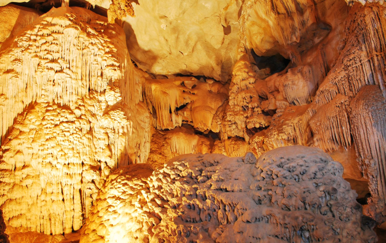

Descubra a Gruta de Ubajara
Localizada no coração da Serra da Ibiapaba, a Gruta de Ubajara é um espetáculo natural com estalactites, estalagmites e formações rochosas incríveis. Um passeio imperdível!
Localizada no coração da Serra da Ibiapaba, a Gruta de Ubajara é um espetáculo natural com estalactites, estalagmites e formações rochosas incríveis. Um passeio imperdível!

Explore trilhas deslumbrantes com mirantes, cachoeiras e muita biodiversidade. Ideal para quem curte natureza e aventura!
O parque é lar de diversas espécies de aves, mamíferos e vegetação típica da Mata Atlântica. Uma imersão na natureza preservada do Ceará.

No parque nacional voce pode andar de Bondinho para descer para a gruta